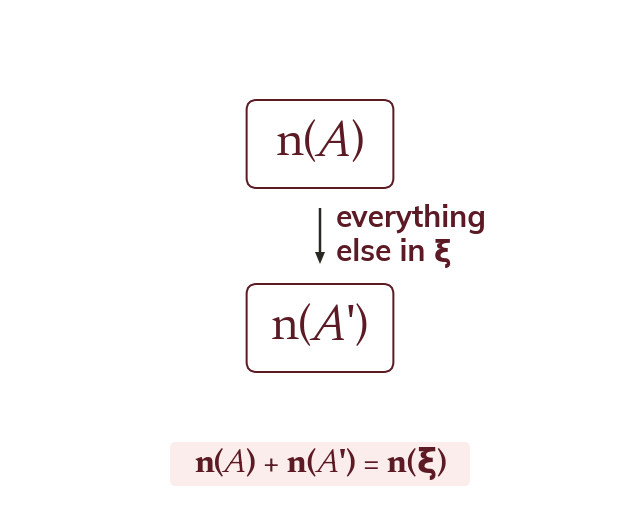
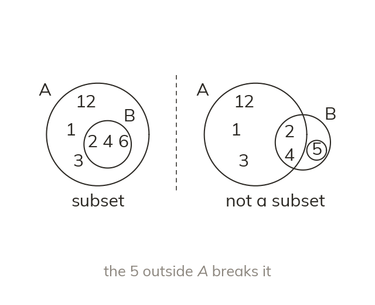
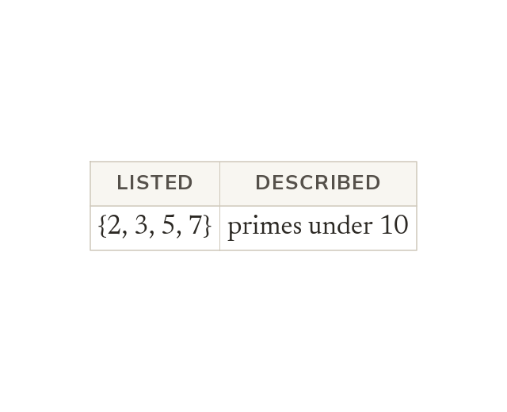

You already used a Venn diagram back in Topic 1 to find the HCF and LCM of two numbers, without ever writing down what a “set” actually is. Today you learn the notation mathematicians use to describe sets precisely – the exact language behind that diagram.
By the end you’ll know…
A set is a collection of distinct elements, named with a capital letter and listed inside curly brackets.
ξ is the universal set, everything under consideration in the question; the empty set has no elements at all.
'in' means is an element of, and 'not-in' means is not.
A' is the complement of A: everything in the universal set that is not in A.
n(A) is the number of elements in A, and n(A) + n(A') = n(ξ).
B subset-of A means every element of B is also an element of A.
By the end you can
G4Use set notation to describe sets, find complements and state n(A).
G5Identify subsets and describe groups of numbers (integers, primes, multiples) using set notation.
Work down the page at your own pace. Write every answer in your book first, then click to check it.
01
Do Now
About 5 minutes
1
List the factors of 20.
1, 2, 4, 5, 10, 20.
2
List the first four multiples of 6.
6, 12, 18, 24.
3
List the prime numbers between 10 and 20.
11, 13, 17, 19.
4
Write 5 × 5 × 5 using index notation.
5³.
Remember these?
LAST LESSONMake x the subject of y = x².
x = ±√y — remember both roots.
LAST WEEKSolve 3(x − 2) = 2(x + 1).
3x − 6 = 2x + 2 x − 6 = 2 x = 8
LAST TERMWhich is bigger: 0.6 of £20 or 65% of £20?
65% — £13 against £12.
LAST YEAR'Closer to A than to B' — which construction gives the boundary of this region?
The perpendicular bisector of AB.
02
Learn
Read each card, then follow the worked examples one step at a time.
What a set is
A set is a collection of distinct elements, written in curly brackets. ∈ means “is an element of”. ξ is the universal set: everything in the question.
A set is a collection of distinct elements, written with a capital letter and listed inside curly brackets, e.g. A = {2, 4, 6}. ∈ means “is an element of” and ∉ means “is not an element of”. The universal set, written ξ, is everything under consideration in the question; the empty set ∅ has no elements at all.

Complement and count
A' is the complement: everything in ξ that is not in A. n(A) is a count, not a set. So n(A) + n(A') = n(ξ).
A' is the complement of A – everything in ξ that is not in A. n(A) is the number of elements in A (a count, not a set), and because every element of ξ is either in A or in A' but never both, n(A) + n(A') = n(ξ).
THE COMPLEMENT
ξ = {1, 2, 3, ..., 10}. A = {2, 4, 6, 8, 10} (the even numbers in ξ). Find A', state whether 5 ∈ A, and state n(A).
List ξ without AA' = {1, 3, 5, 7, 9} (A' is everything in ξ that is not in A)
Is 5 in A?5 ∉ A (A holds only even numbers, and 5 is odd)
Count the elements of An(A) = 5 (n(A) counts the elements; it is not the set itself)
Checkn(A) + n(A') = 5 + 5
= 10
= n(ξ). Correct.
YOUR TURN · a
With ξ = {1, 2, ..., 6} and A = {2, 4, 6}, find A' and state n(A).
ξ = {1, 2, 3, ..., 12}. B = {3, 6, 9, 12} (the multiples of 3 in ξ). Find B', state whether 8 ∈ B, and state n(B). (Hint: which numbers from 1 to 12 are left once you remove B?)
B' = {1,2,4,5,7,8,10,11}; 8∉B; n(B)=4; check n(B)+n(B')=4+8=12.
03
Check your understanding
Pick an answer. If it's wrong, the feedback tells you which mistake it was.
What does A' represent?
Yes. A' is everything in ξ that isn't in A.
Not quite. That's n(A), a count. A' is a set: everything in ξ not in A.
Not quite. That's A itself. A' is everything else in ξ.
Not quite. A' only uses elements of ξ. Leave out anything outside ξ.
ξ = {1,2,...,9}. C = {1,4,9} (the square numbers in ξ). What is C'?
Yes. Take 1, 4 and 9 out of ξ: {2, 3, 5, 6, 7, 8}.
Not quite. That's C itself. C' is everything else in ξ.
Not quite.0 and 10 aren't in ξ. C' only uses the numbers 1 to 9.
Not quite.6 is n(C'), a count. C' is the set {2, 3, 5, 6, 7, 8}.
ξ = {1,2,...,8}. D = {2,3,5,7} (the primes in ξ). What is n(D)?
Not quite.n(D) is a count, not a set: D has 4 elements.
Yes.D = {2, 3, 5, 7} has 4 elements, so n(D) = 4.
Not quite.8 is n(ξ). Count only the elements of D.
Not quite. Count again: 2, 3, 5, 7 is 4 elements.
04
Practise
mark as you go
Checkpoint. ξ = {1,2,...,10}. E = {1,3,5,7,9} (the odd numbers in ξ). Find E', state whether 6 ∈ E, and state n(E). Check that n(E) + n(E') = n(ξ) before you move on – I'll check it.Show your teacher before you go on
1
ξ = {1, 2, 3, ..., 9} and A = {1, 4, 9}. Find A' and n(A').
A' = {2, 3, 5, 6, 7, 8} n(A') = 6
2
ξ = {a, b, c, d, e, f} and V = {a, e}. Find V' and state n(V).
V' = {b, c, d, f} n(V) = 2
3
ξ = {1, 2, 3, ..., 15} and M = {5, 10, 15}. True or false? (a) 10 ∈ M (b) 12 ∈ M (c) 7 ∉ M
(a) True (b) False (c) True
4
n(ξ) = 30 and n(B) = 12. Find n(B').
n(B) + n(B') = n(ξ) n(B') = 30 - 12 = 18
5
ξ = {1, 2, 3, ..., 8} and C' = {2, 3, 5, 7}. Find C.
C is everything in ξ not in C' C = {1, 4, 6, 8}
EXT
ξ = {1, 2, 3, ..., 20} and D = {square numbers}. List D, then find n(D') without listing D'.
Read each card, then follow the worked examples one step at a time.

Subsets
B ⊆ A means every element of B is also in A. Check each element of B in turn. Most of them is not enough.
B ⊆ A means every element of B is also an element of A – to check, go through each element of B in turn and confirm it appears in A. It is not enough for most of B's elements to appear, and it is not the same relation as A ⊆ B.

Describing groups with notation
A set can be described by the property its elements share. Here 2, 3, 5 and 7 are the primes under 10.
instead of listing every element, a set can be described by the property its elements share, e.g. the set of prime numbers less than 20, or the set of multiples of 4 between 1 and 30 (checking the wording carefully for which boundary values are included).
SUBSETS
A = {factors of 12} = {1, 2, 3, 4, 6, 12}. B = {2, 4, 6}. Is B ⊆ A?
Test each element of B2 ∈ A, 4 ∈ A, 6 ∈ A
Every element of B is also in A, so B ⊆ A
WRITING A SET
Now describe the set of prime numbers less than 20 using set notation.
P = {2, 3, 5, 7, 11, 13, 17, 19}
YOUR TURN · c
Given A = {factors of 10} = {1, 2, 5, 10} and B = {2, 5}, decide whether B ⊆ A.
2 ∈ A and 5 ∈ A, so every element of B is in A and B ⊆ A.
YOUR TURN · d
A = {factors of 20} = {1,2,4,5,10,20}. C = {2,5,10}. Is C ⊆ A? Then describe the set of multiples of 4 between 1 and 30 using set notation. (Hint: check each element of C against A in turn.)
2∈A, 5∈A, 10∈A, so C ⊆ A. Multiples of 4 between 1 and 30: {4,8,12,16,20,24,28}.
06
Check your understanding
Pick an answer. If it's wrong, the feedback tells you which mistake it was.
A = {1,2,3,4,5,6}. B = {2,3,7}. Is B ⊆ A?
Not quite. Every element of B must be in A. 7 isn't, so no.
Yes.7 is in B but not in A, so B isn't a subset of A.
Not quite. A isn't inside B either. Check each element of B: 7 isn't in A.
Not quite. Size doesn't decide it. Check each element of B: 7 isn't in A.
D = {4, 8}. E = {2, 4, 6, 8, 10}. Which statement is correct?
Yes.4 and 8 are both in E, so D ⊆ E.
Not quite.4 is a single element, so write 4 ∈ E, not ⊆.
Not quite.E has 2, 6 and 10, which aren't in D. It's D ⊆ E.
Not quite.D is a set, not one element. Use ⊆ for a set: D ⊆ E.
Which set notation correctly describes the multiples of 5 between 1 and 25?
Yes. The multiples of 5 are 5 × 1 up to 5 × 5: {5, 10, 15, 20, 25}.
Not quite.1, 5 and 25 are factors of 25. Multiples of 5 are 5, 10, 15, …
Not quite.25 is a multiple of 5 too, and it's included here.
Not quite.5 is only the first multiple. Keep going: 10, 15, 20, 25.
07
Practise
mark as you go
Checkpoint.A = {factors of 18} = {1,2,3,6,9,18}. F = {3,6,9}. Is F ⊆ A? Then describe the set of prime numbers less than 15 using set notation. Show your working – I'll check it before you move on.Show your teacher before you go on
1
List the elements of {factors of 16}.
{1, 2, 4, 8, 16}
2
P = {1, 2, 4, 8, 16}, Q = {2, 8} and R = {2, 6}. Is Q ⊆ P? Is R ⊆ P?
2 ∈ P and 8 ∈ P: Q ⊆ P 6 ∉ P: R is not a subset of P
3
List the elements of {prime numbers between 20 and 40}.
{23, 29, 31, 37}
4
List the elements of {multiples of 6 less than 40}.
{6, 12, 18, 24, 30, 36}
5
Describe {1, 3, 5, 7, 9, 11} in words, in set notation.
{odd numbers less than 12}
EXT
T = {multiples of 4 less than 30} and S = {multiples of 8 less than 30}. Is S ⊆ T? Is T ⊆ S? Explain.
S = {8, 16, 24}: every multiple of 8 is a multiple of 4, so S ⊆ T 4 ∈ T but 4 ∉ S: T is not a subset of S
08
Exit ticket
On paper, on your own, then check
1
What is the difference between n(A) and A'? Use an example to show what each one actually gives you.
n(A) is a number - how many elements are in set A. A' is a set - everything in the universal set that is NOT in A. E.g. if A={2,4,6}, n(A)=3, but A' would be a whole different list of elements, not a count.
2
ξ = {1,2,...,10}. G = {1,2,4,5,10} (the factors of 20 that are in ξ). Find G' and state n(G).
G' = {3,6,7,8,9}; n(G) = 5.
3
A = {factors of 16} = {1,2,4,8,16}. B = {2,4,8}. Is B ⊆ A? Then describe the set of multiples of 3 between 1 and 20 using set notation.
Yes, B is a subset of A (every element of B is in A). Multiples of 3 between 1 and 20: {3,6,9,12,15,18}.
Finished? Next lesson: 8.7.2 Venn Diagrams.
Practise more
After the lesson, or whenever you want more
Dr Frost
Log in, then search for a code to practise that skill.
243bUnderstand notation for the universal set, subsets, membership and empty sets.
243fList elements using set notation.
243gDetermine the number of elements in a set given a list.